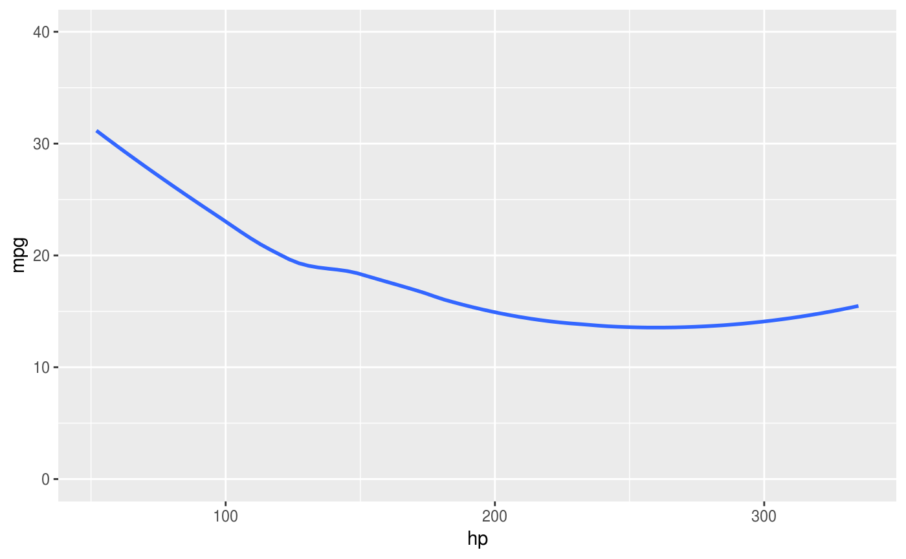
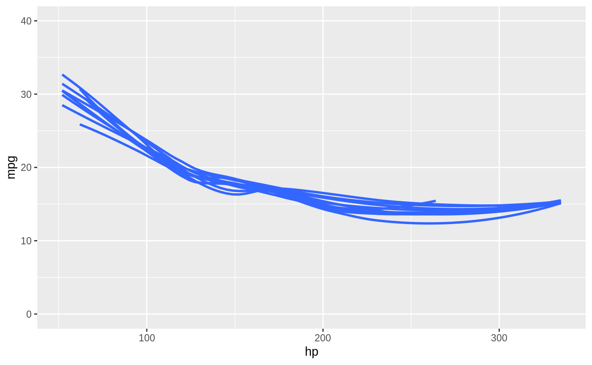

Introduction
The goal of strapgod is to create virtual groups on top of a tibble or grouped_df as a way of resampling the original data frame. You can then efficiently perform various dplyr operations on this resampled_df, like: summarise(), do(), group_map(), and more, to easily compute bootstrapped and resampled statistics.
Installation
You can install the released version of strapgod from CRAN with:
Install the development version from GitHub with:
Learning about strapgod
If you aren’t already on the pkgdown site, I would encourage starting there. From there, you will be able to click on these two vignettes to learn about working with resampled tibbles.
Example
Create resampled data frames with bootstrapify() or samplify(). Notice how we grouped by the virtual column, .bootstrap and there are still only 150 rows even though we bootstrapped this dataset 10 times.
library(strapgod)
library(dplyr)
set.seed(123)
bootstrapify(iris, 10)
#> # A tibble: 150 x 5
#> # Groups: .bootstrap [10]
#> Sepal.Length Sepal.Width Petal.Length Petal.Width Species
#> <dbl> <dbl> <dbl> <dbl> <fct>
#> 1 5.1 3.5 1.4 0.2 setosa
#> 2 4.9 3 1.4 0.2 setosa
#> 3 4.7 3.2 1.3 0.2 setosa
#> 4 4.6 3.1 1.5 0.2 setosa
#> 5 5 3.6 1.4 0.2 setosa
#> 6 5.4 3.9 1.7 0.4 setosa
#> 7 4.6 3.4 1.4 0.3 setosa
#> 8 5 3.4 1.5 0.2 setosa
#> 9 4.4 2.9 1.4 0.2 setosa
#> 10 4.9 3.1 1.5 0.1 setosa
#> # … with 140 more rowsYou can feed a resampled_df into summarise() or group_map() to perform efficient bootstrapped computations.
iris %>%
bootstrapify(10) %>%
summarise(per_strap_mean = mean(Petal.Width))
#> # A tibble: 10 x 2
#> .bootstrap per_strap_mean
#> <int> <dbl>
#> 1 1 1.20
#> 2 2 1.22
#> 3 3 1.23
#> 4 4 1.13
#> 5 5 1.20
#> 6 6 1.15
#> 7 7 1.18
#> 8 8 1.13
#> 9 9 1.31
#> 10 10 1.19The original data can be grouped as well, and the bootstraps will be created for each group.
iris %>%
group_by(Species) %>%
bootstrapify(10) %>%
summarise(per_strap_per_species_mean = mean(Petal.Width))
#> # A tibble: 30 x 3
#> # Groups: Species [3]
#> Species .bootstrap per_strap_per_species_mean
#> <fct> <int> <dbl>
#> 1 setosa 1 0.25
#> 2 setosa 2 0.246
#> 3 setosa 3 0.24
#> 4 setosa 4 0.238
#> 5 setosa 5 0.252
#> 6 setosa 6 0.274
#> 7 setosa 7 0.238
#> 8 setosa 8 0.258
#> 9 setosa 9 0.252
#> 10 setosa 10 0.256
#> # … with 20 more rowsPlotting bootstrapped results
A fun example of using strapgod is to create bootstrapped visualizations quickly and easily for hypothetical outcome plots.
set.seed(123)
library(ggplot2)
# without bootstrap
mtcars %>%
ggplot(aes(hp, mpg)) +
geom_smooth(se = FALSE) +
ylim(y = c(0, 40))
# with bootstrap
mtcars %>%
bootstrapify(10) %>%
collect() %>%
ggplot(aes(hp, mpg, group = .bootstrap)) +
geom_smooth(se = FALSE) +
ylim(y = c(0, 40))
In the wild
Claus Wilke has used strapgod to power some pieces of his ungeviz package for visualizing uncertainty.
You can watch Claus’s rstudio::conf 2019 talk to see ungeviz and strapgod in action.